「泰国珍寺修行 北へ」、いよいよ最終ステージへと突入する。
最後の修行の地は湖畔の街、パヤオ。
果たして修行の成果を発揮して高い珍寺ステージに到達できるのだろうか…出来ないっすね。
パヤオといえば思い出されるのがかつて渡辺二郎と死闘を繰り広げたパヤオ・プーンタラット（古いすか）。
好きだったなあ～パヤオ。
今考えればトニー☆ジャー以前に初めてカッコいい！と思ったタイ人だったような気がする…死んじゃったんですけどね。
あ、別にパヤオの街とは一切関係ないのでこれ以上ハナシは広げませんが、パヤオ氏においてはご冥福をお祈りします。
ところでタイの主な町の市街地の入口にはこのようなシティゲートがある。
中央にプミポン国王、そして左右には県の役人なんだろうか、議員なんだろうか、偉そうな人達の肖像が掲げられている。
みなさんがっつし詰襟の服なんか着ちゃってかなり物々しい雰囲気。長距離のドライブの果てにこのゲートが現れると「ああ、やっと着いた…」とホッとする目印でもある。あ、これも余談でしたね。
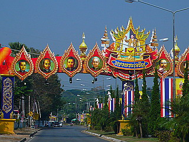
で、そんなゲートを潜り、市街地に程近いワットシーコンカンに行く。
駐車場には沢山の車が停まっており、参拝客でごった返している。パヤオでは人気スポットのご様子。
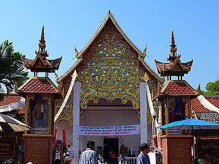
本堂に入ると大仏さんがデーンと構えている。
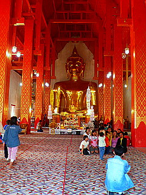
高さ18メートル。奈良の大仏どころか越前大仏よりも大きい事になる。
敷居の低い大仏さんなのでそんな立派に見えないけど。
目が「～」←こんな感じになっていて表情がよくわかんないのが敗因かと。あ、負けちゃないですけど。
本堂前の売店では修復前の大仏さんの写真が売られていた…大仏さん、楽天のマー君だったんだ…
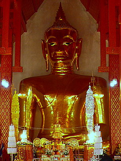 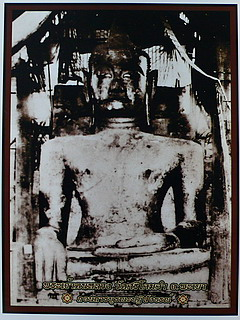
大仏さんの前には数日前に亡くなったカラヤニ王女の遺影が掲げられていた。
この日に限っては大仏さんよりもこの遺影に拝する人の方が多かった。
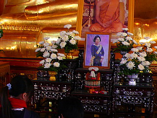
さて。
そんな本堂の右手にはコンクリパラダイスがある。
大勢の参拝客がこの寺に訪れている割にはこのパラダイスにはあまり人がいないのがチト気掛かりだ…
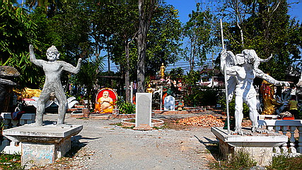
入口の左右にはハヌマーンと…ガネーシャ？羽根とか付いちゃってますけど…
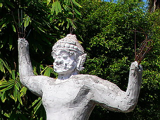 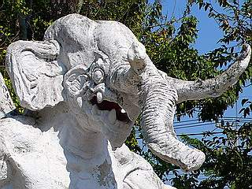
そのまた隣には何故か恐竜。
両手が食べられちゃってますね。あ、ハヌマーンも
ハヌマーンといえば…こちらのハヌマーンもかなり無茶してます。
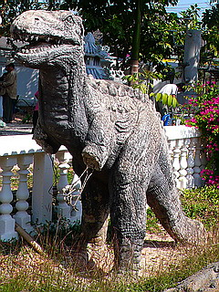
この時点で展開が全く読めないラインナップに血糖値上昇気味。
中に入ってすぐ左手にはお釈迦サマの入滅を見守る僧の図。
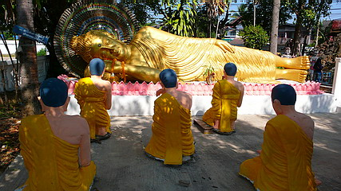
お釈迦サマのお弟子さんたちはのっぺらぼうでした…
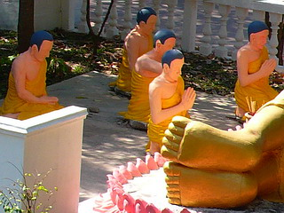
寝釈迦サマの隣の門にもキテレツな神様、なのか怪獣なのかよくわからん生き物が。
ビシッとペイントされているので雑多な場所でも存在感満点。美女に抱きつく猿神のアクロバティックなポーズなどはコンクリ像としてはかなりレベルの高い作品とお見受けしましたぞ。
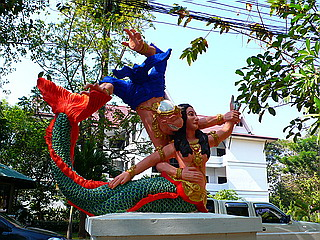 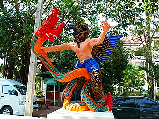
修行釈迦座像
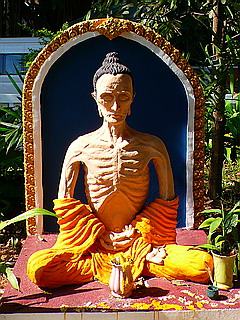
片隅では仏塔製作中。
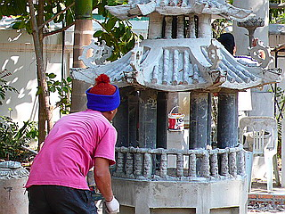
門の右手にはタイの一大パノラマ精神風景。
龍がのた打ち回る池から階段を上っていくと頂上には金ぴか仏陀がお出迎え。
この緑とオレンジの龍が強烈なインパクトを放っている。
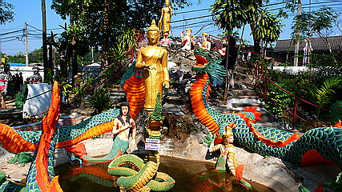
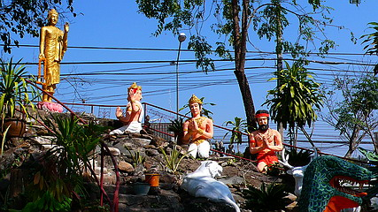
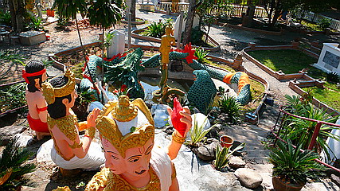
ここでの光景を挙げるまでもなく、タイではメインの金ぴかの仏像に対してあまりにもサブキャラ群が目立ちすぎていると思う。
仏サマが金ピカとはいえ人の形をして単色であるのに対して、本来は仏サマの引き立て役、刺身のツマ、かませ犬であるはずの長州、じゃなくてサブキャラ群なのだが、まずカタチが強烈に変、で、色もバキバキに補色系ツートンカラーだったりするので、結果主人公の仏サマが霞んでしまうという現象が起こってしまうのだ。
いいのか仏教？それで。これはもしかして仏教の危機なのではなかろうか？
ホラ、こんな人とかに目が釘付けだもの。
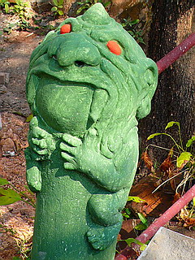
このようなタイ仏教界、ひいては仏教界全体の抱える大問題はとりあえず放置しつつ、いよいよ大団円へと向かいます。
ワットシーコンカン；その2 へつづく